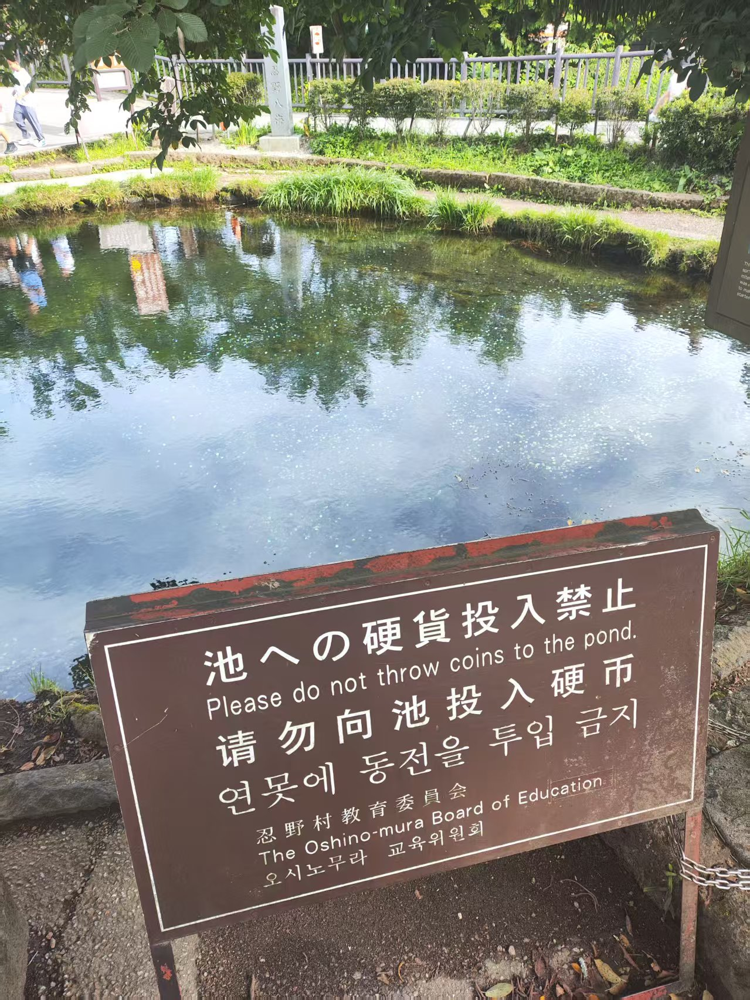
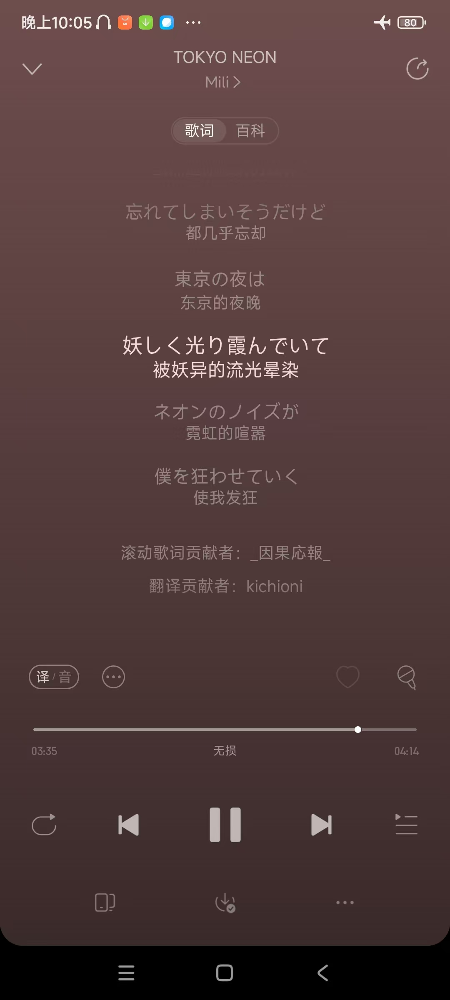

随笔选辑 - 东京
返回目录
想到哪写到哪，One Take，感觉会写得没有什么逻辑。
作为一个从小在大城市里长大的人，我对于车水马龙的大马路、巨大的购物中心、五颜六色的霓虹夜景、水泄不通的地铁站这些景象见得多了，以致于来到北京上学后觉得海淀是个非常荒凉萧条的地方。
东京虽然也有这以上种种，从某种角度来说和上海挺像的；但它却还有些其他的特质，让我感到新鲜。我不知道怎么概括这些特质，于是就将这座城市的名字赤裸裸地当作标题了。
小时候，我觉得世纪大道站是个很特别的地方，因为同时有 2 号线、4 号线、6 号线、9 号线四条线经过它；然而东京的铁路系统就比较震撼。就说我们酒店所在的新宿：我数不清有几条地铁经过新宿站，而且整个站地上地下都大的离谱，在国内坐地铁我一般都不关注从哪个口出站——这个习惯帮我在新宿和涩谷刷了很多步数。
来到东京的时候，我突然想到这次到日本的机会成本其实不小，接连有两个展会这段时间在上海举办——7 月中旬的 BW 和 19 号的月计 Only。虽然我中学的时候不逛漫展，但这样的热闹总是想蹭一下的，来不了仍然有点可惜（虽然先前也没抢票就是了），这或许构成了我在涩谷和秋叶原七进七出（有点夸张）的一部分理由。
写到这里，我又想到前些天阿良良木健巡演好像也到了上海，可惜没怎么听过；我又想到下个月初泠鸢的演唱会也在上海，可惜我也不是粉丝，不过以撒竞速班的几个群友应该要来。这里可真是个热闹的地方。
在秋叶原和涩谷逛了不少店。我的消费观其实比较特别：我觉得文娱产品（特别是游戏、书籍、漫画、CD 等，周边可能不一定算）的性价比基本是无穷高，所以我在这方面不会节约，反而会觉得给喜欢的作品多上供一点也比较好——比如我在 steam 上买游戏不会特意等到促销，也不会因为游戏比较贵就等到打折再买，因为在我看来把钱花在买游戏上实在是太赚太便宜了，相比其实用价值来说多一百块钱少一百块钱根本无足轻重（注：也就是说，在考虑要不要等打折的时候，其实我们把“打折省下来的钱”和“晚一段时间玩到这个游戏”放在天平的两端，而这个比较的结果对我来说非常 trivial）。所以我逛街的时候基本也是从心所欲，只是看自己想不想要。
Animate：主要是有很多漫画，但我看了一下好像都是日语的，所以就没考虑了（不过我在涩谷的一个不知名书店里倒是找到了两卷十分罕见的简中版芙莉莲，于是直接拿下了）；此外还有一些设定集，比较感兴趣的是魂系的以及弹丸 1~2 的，但是应该也是日语，所以也算了；最后在楼上好像还看到一些本子，简单思考了一下感觉可能过不了海关（其实好像无所谓，不过我也没兴趣啊！）。
Radio：主要是一些周边，手办和徽章之类的。感觉这里东西挺全，但是我不喜欢手办，可惜了；最后还是买了一些别的东西。
PARCO：主要是游戏的周边，看到了世嘉、卡普空和任天堂的店子，但是你怎么知道我不玩 Persona，不玩怪猎也不玩塞尔达。我对逆转裁判和卡比倒是比较感兴趣的，但是似乎也没什么好到想买的东西（要不是宿舍里已经有个卡比抱枕，高低是要买一个的）。
Tower Records：nb！感觉是听的音乐越多的人越会兴奋的地方；即使我听的不多，也能找到很多感兴趣的 CD。虽然曾经有盲买一些没听过的摇滚专辑的想法，但是后来打消了这个念头，感觉来日本就得买点日本小偶像的专辑，于是给结束乐队、EGOIST、milet、异世界情绪狠狠上供了。
这里也插一点点小小的牢骚吧：现在二次元的大 ip 是各种二游、少女乐队企划，以及不知道几十年前的经典日式游戏和少年漫画。尽管我善于冲浪，成分复杂，可以说是能认很多角色和作品，但究竟是没有什么归属感。我所钟爱的独立游戏、独立音乐和一些十年前不算大热的动画等等 ip 始终处于一个不温不火的状态，想要线下买到周边基本上是不可能的。
在这边吃得很好，烧鸟、烧肉、寿司、鳗鱼之类的都很不错！感觉我的饮食偏好中除去川菜这个分量之后（which has a large weight）跟日本的同步率还挺高。
关于名胜古迹和自然风光，我感到不知道可以说些什么，因为我本身对此不是特别敏感。不过该说的是其实新奇感还是很足的：日本的神社和寺院的景象都是国内见不到的，而一些商业街也因为卖一些当地特产而让人有一点想走走的欲望。
一些 pyq 放不下但有有点意思的照片，不解说了各位自行理解一下吧。
最后这张稍微说一下吧，如果我没看错的话，水底下都是硬币。
